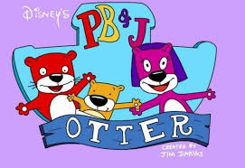

An amazing book to read is by Gavin Maxwell called Ring of Bright Water. This is the story of how he brought an Otter from Scotland to live with him in Iraq. This book tells about the various adventures that occurred. It is also very compassionate and humorous in some spots so make sure you read it.
Marlene is the Otter featured in the cartoon movie The Penguins of Madagascar.
The Europeans believed that the Otter is really a type of god in disguise. This is why it has characteristics including the ability to scream and to chuckle. They believe this particular type of god stayed on Earth in the form of an animal to see how others would treat it. Those that honored it and were respectful to the land and the water would have a long and happy life. Those that didn’t though would have a life full of suffering.
